8.033 Problem Set 4: The Doppler Effect, 4-Vector Invariants & the Twin
Paradox
The Doppler Effect
French: 5-9
Q: Three identical radio transmitters A, B, and C each transmitting at the
frequency in its
own rest frame are moving as shown.
<---A B C-- ->
(a) What is the frequency of B's signals as received by C?
(b) What is the frequency of A's signals as received by C? There are at least
three ways to solve this question. See if you can find two.
A: (a) Let the inverse of the frequency be the time . Redshift it!
The frequency is the inverse of the time component, or
(b) We need another redshift of exactly the same size.
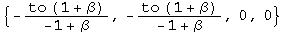
The frequency it the inverse of the time component, so 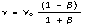.
(b') Another approach is to boost the initial event with a speed equal to the two boosts, which by the addition of velocity formula is shown below.
![[Graphics:ps4gr10
.gif]](../../images/SR/problem_set_4/ps4gr10.gif)
Redshift with this velocity and try to simplify.
![[Graphics:ps4gr11
.gif]](../../images/SR/problem_set_4/ps4gr11.gif)
![[Graphics:ps4gr12.gif]](../../images/SR/problem_set_4/ps4gr12.gif)
A step away from the previous result.
French: 5-10
Q: A pulsed radar source is at rest at the point x = 0. A large meteorite
moves with constant velocity v toward the source; it is at the point x = -d at
t = 0. A first radar pulse is emitted by the source at t = 0, and a second
pulse at t = to (to << d/c). The pulses are reflected by the meteorite
and return to the source. (a) Draw in space-time graph (1) the source, (2) the
meteorite, (3) the two outgoing pulses, (4) the reflected pulses. (b) Evaluate
the time interval between the arrivals at x = 0 of the two reflected pulses.
(c) Evaluate the time interval between the arrivals as the meteorite of the
two outgoing pulses, as measured in the rest frame of the meteorite.
Answer (b) and (c) first with a well-chosen Lorentz transformation. Then
answer again, this time using the Doppler effect and the results of the above
problem (French 5-9).
A: (a) This space-time graph of the meteorite was constructed in the program "Space-time" by Prof. Edwin F. Taylor.

(b) Chose the frame of the Earth. The world line of the first pulse is
q[t, -t, 0,0]. The worldline of the meteorite is q[t, v t/c - d,0,0]. Solve
for the time when the distances are the same.
The distance traveled is the same, so it arrives back at the Earth at
![[Graphics:ps4gr15
.gif]](../../images/SR/problem_set_4/ps4gr15.gif)
Find the time at which the second pulse arrives at the meteorite. The only change is the departure of the pulse.
![[Graphics:ps4gr16
.gif]](../../images/SR/problem_set_4/ps4gr16.gif)
Use the time to find pulse 2's position.
![[Graphics:ps4gr18
.gif]](../../images/SR/problem_set_4/ps4gr18.gif)
Add these together to find the return time.
![[Graphics:ps4gr20
.gif]](../../images/SR/problem_set_4/ps4gr20.gif)
![[Graphics:ps4gr21.gif]](../../images/SR/problem_set_4/ps4gr21.gif)
Examine the interval between the arrival of the two pulses back to the Earth.
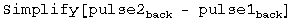
![[Graphics:ps4gr23.gif]](../../images/SR/problem_set_4/ps4gr23.gif)
The interval between the arrival of the two pulses is shifted by a factor
![[Graphics:ps4gr24.gif]](../../images/SR/problem_set_4/ps4gr24.gif) .
.
(c) Choose the rest frame of the meteorite. Boost the emission event to this frame.
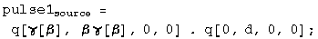
Add the time after being boosted together with the position needed to travel to the meteorite to get the time of pulse 1 at the meteorite.
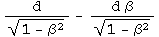
Repeat this process for pulse 2.
![[Graphics:ps4gr28
.gif]](../../images/SR/problem_set_4/ps4gr28.gif)
![[Graphics:ps4gr29
.gif]](../../images/SR/problem_set_4/ps4gr29.gif)
![[Graphics:ps4gr30.gif]](../../images/SR/problem_set_4/ps4gr30.gif)
Examine the interval between the arrival of the two pulses at the meteorite.
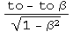
The interval between the arrival of the two pulses at the meteorite is shifted by a factor .
(b') From the reference frame of the meteorite, the pulse of light would be blueshifted from the source, and blueshifted to the receiver. Use the result from 5-9 (b).
![[Graphics:ps4gr34
.gif]](../../images/SR/problem_set_4/ps4gr34.gif)
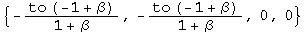
The time interval between pulses is
![[Graphics:ps4gr36.gif]](../../images/SR/problem_set_4/ps4gr36.gif) .
.
(c') As stated above, the pulse of light from the source is blueshifted, so using a modified answer from 5-9 (a).
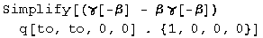
![[Graphics:ps4gr38.gif]](../../images/SR/problem_set_4/ps4gr38.gif)
The time interval between pulse at the meteorite is
![[Graphics:ps4gr39.gif]](../../images/SR/problem_set_4/ps4gr39.gif) .
.
French: 5-11
Q: An astronaut moves radially away from the Earth at a constant acceleration (as measured in the Earth's reference frame) of 9.8 m/s^2. How long will it be before the redshift makes the red glare of the neon signs of Earth invisible to his human eyesight?
A: Solve for the velocity which redshifts the wavelength of neon
(~600 nm) to invisible (~700 nm).
![[Graphics:ps4gr40
.gif]](../../images/SR/problem_set_4/ps4gr40.gif)
![[Graphics:ps4gr41.gif]](../../images/SR/problem_set_4/ps4gr41.gif)
The time required at a constant acceleration is t = v/a.
![[Graphics:ps4gr42
.gif]](../../images/SR/problem_set_4/ps4gr42.gif)
![[Graphics:ps4gr43.gif]](../../images/SR/problem_set_4/ps4gr43.gif)
After 54 days, the neon lights become invisible to the astronaut's eyes.
French: 5-12
Q: There is a spaceship shuttle service from the Earth to Mars. Each spaceship is equipped with two identical lights, one at the front and one at the rear. The spaceships normally travel at a speed vo, relative to the Earth, such that the headlight of a spaceship approaching Earth appears green (500 nm) and the taillight of a departing spaceship appears red (600 nm). (a) what is the value of vo/c? (b) One spaceship accelerates to overtake the spaceship ahead of it. At what speed must the overtaking spaceship travel relative to the Earth so that the taillight of the Mars-bound spaceship ahead of it looks like a headlight (500 nm green)?
A: (a) Solve for the velocity that reverses the shifts to the same wavelength (i.e., redshift the headlight's blueshifted light to the wavelength of the taillight's blueshifted redshifted light ; )
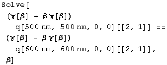
![[Graphics:ps4gr45.gif]](../../images/SR/problem_set_4/ps4gr45.gif)
The spaceships travel at vo/c = 1/11.
(b) Solve for the velocity needed to shift the wavelength from 600 to 500 nm.
![[Graphics:ps4gr46
.gif]](../../images/SR/problem_set_4/ps4gr46.gif)
![[Graphics:ps4gr47.gif]](../../images/SR/problem_set_4/ps4gr47.gif)
The required velocity is v/c = 11/61.
R & H: 2-68 A Doppler shift revealed as a color change
Q: A spaceship is receding from the Earth at a speed of 0.20c. A light on the rear of the ship appears blue (450 nm) to the passengers on the ship. What color would it appear to an observer on the Earth?
A: Redshift the light at 450 nm by 0.20c.
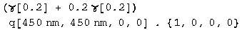
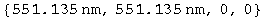
The light appears at 551 nm, yellow.
R & H: 2-71 The Ives-Stillwell experiment
Q: (long) Neutral hydrogen atoms are moving along the axis of an evacuated tube with a speed of 2.0 x 10^6 m/s. A spectrometer is arranged to receive light emitted by these atoms in the direction of their forward motion. This light, if emitted from resting hydrogen atoms, would have a measured (proper) wavelength of 486.13 nm. (a) Calculate the expected wavelength for light emitted from the forward-moving (approaching) atoms, using the exact relativistic formula. (b) By using a mirror this same spectrometer can also measure the wavelength of light emitted by these moving atoms in the direction opposite to their motion. What wavelength is expected under this arrangement? (c) Calculate the difference between the average of the two wavelengths found in (a) and (b) and the unshifted (proper) wavelength. Find the second order dependence on beta. By this technique, Ives and Stillwell were able to distinguish between the predictions of the classical and the relativistic Doppler formulas.
A: (a) & (b) Red- and blue shift the light at 486 nm +/- the speed of the moving hydrogen.
![[Graphics:ps4gr50
.gif]](../../images/SR/problem_set_4/ps4gr50.gif)
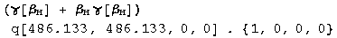
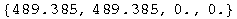
![[Graphics:ps4gr54
.gif]](../../images/SR/problem_set_4/ps4gr54.gif)
![[Graphics:ps4gr55.gif]](../../images/SR/problem_set_4/ps4gr55.gif)
The light is redshifted to 489.4 nm and blueshifted to 482.9 nm.
(c) We can measure the average of these two shifted wavelengths, or their average difference.
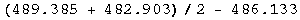
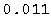
According to classical theory, if the observer is fixed, and the source moves, there is no second order dependence on beta.
![[Graphics:ps4gr60
.gif]](../../images/SR/problem_set_4/ps4gr60.gif)
If the source is fixed but the observer moves, then
![[Graphics:ps4gr61
.gif]](../../images/SR/problem_set_4/ps4gr61.gif)
Special relativity predicts a coefficient of +0.5 for the beta squared term, the one measured in the lab.
R&H: 2-83 The headlight effect
Q: A source of light, at rest in the S' frame, emits uniformly in all directions. The source is viewed from frame S, the relative speed parameter relating the two frames being beta. (a) Show that at high speeds, the forward- pointing cone into which the source emits half of its radiation has a half angle given closely, in radian measure, by
(b) What value of the half angle is predicted for the gamma radiation emitted by a beam of energetic neutral pions, for which v/c = 0.993? (c) At what speed would a light source have to move toward an observer to have half of its radiation concentrated into a narrow forward cone of half angle 5.0 degrees?
A: This problem requires a boost quaternion that works with nonzero values for t, x, y, and z. See the last problem set in the addition of velocities section for the derivation of the following boost quaternion, or the notebook on "Alternative algebra for boosts":
![[Graphics:ps4gr63
.gif]](../../images/SR/problem_set_4/ps4gr63.gif)
Boost a spherically symmetric velocity quaternion, normalizing to the resulting gamma so the resulting quaternion still characterizes velocities.
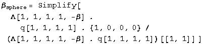
![[Graphics:ps4gr65.gif]](../../images/SR/problem_set_4/ps4gr65.gif)
Calculate the angle directly from the ratio of speeds.
![[Graphics:ps4gr66
.gif]](../../images/SR/problem_set_4/ps4gr66.gif)
![[Graphics:ps4gr67.gif]](../../images/SR/problem_set_4/ps4gr67.gif)
As beta approaches 1, this angle approaches .
(b) Let beta -> 0.993.
![[Graphics:ps4gr69
.gif]](../../images/SR/problem_set_4/ps4gr69.gif)
![[Graphics:ps4gr70.gif]](../../images/SR/problem_set_4/ps4gr70.gif)
The predicted half angle for the gamma rays is 6.79 degrees.
(c) Solve for beta, given the angle.
![[Graphics:ps4gr71
.gif]](../../images/SR/problem_set_4/ps4gr71.gif)
![[Graphics:ps4gr72.gif]](../../images/SR/problem_set_4/ps4gr72.gif)
A light source would have to travel at 0.9962c to concentrate its radiation in a forward cone of half angle 5 degrees.
Four-Vector Invariants
Baranger: Decay of a particle - time-like or space-like?
Q: In event 1, an unstable particle is produced in the target of an accelerator. In event 2, this particle decays 5 meters away. Is the interval between these two events time-like or space-like? Why?
A: The speed of the particle must be less than one, or x/t < 1. If event 1 is at the origin and event 2 has a spatial position of 5m, it must have a time of 5m + a (a>0). Calculate the square of the interval by squaring the quaternion.
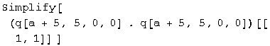
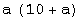
The square of the interval a^2 + 10a is always positive, so the interval is time-like in the future.
R&H: 2-42 The interval is invariant - check it out
Q: Two events occur on the x axis of reference frame S, their space-time coordinates being event1 = q[5 us, 720 m,0,0 ] and event 2 = [2 us, 1200 m,0,0 ]. (a) What is the square of the space-time interval for these two events? (b) What are the coordinates of these events in a frame S' that moves at speed 0.60c in the direction of increasing x? Calculate the square of the interval in this frame and compare it to the value calculated for frame S. (c) What are the coordinates of these events in a frame S" that moves at a speed of 0.95c in the direction of decreasing x? Again calculate the square of the space-time interval and compare it with the values found in (a) and (b). Do your calculations bear out the invariance of the space-time interval?
A: (a) The square of the space-time interval between events 1 and 2 is the first term of difference between the quaternions squared.
![[Graphics:ps4gr76
.gif]](../../images/SR/problem_set_4/ps4gr76.gif)
![[Graphics:ps4gr77
.gif]](../../images/SR/problem_set_4/ps4gr77.gif)
![[Graphics:ps4gr78.gif]](../../images/SR/problem_set_4/ps4gr78.gif)
The square of the interval between event 1 and 2 is 5.8 x 10^5 m^2.
(b) Boost the quaternions and then square them.
![[Graphics:ps4gr79
.gif]](../../images/SR/problem_set_4/ps4gr79.gif)
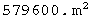
The square of the interval between the boosted events is the same.
(c) Repeat the exercise with a new value for beta.
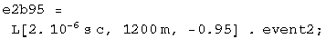
![[Graphics:ps4gr86.gif]](../../images/SR/problem_set_4/ps4gr86.gif)
Again, the square of the interval between the boosted events is the same. The first term of the square of a quaternion is identical to the first term of a square of a boosted quaternion.
R&H: 2-43 An event pair - time-like or space-like?
Q: Two events occur on the x axis of reference frame S, their space-time coordinates being event1 = q[5 us, 200 m,0,0] and event 2 = [2 us, 1200 m,0,0]. (a) What is the square of the space-time interval for these two events? (b) What is the proper distance interval between them? (c) If two events possess a (mathematically real) proper distance interval, it should be possible to find a frame S' in which these events would be seen to occur simultaneously. Find this frame. (d) Can you calculate a (mathematically real) proper time interval for this pair of events? (e) Would you describe this pair of events as time-like? Space-like? Light-like?
A: (a) The square of the space-time interval between events 1 and 2 is the first term of difference between the quaternions squared.
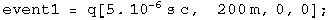
![[Graphics:ps4gr89
.gif]](../../images/SR/problem_set_4/ps4gr89.gif)
The square of the interval between event 1 and 2 is -1.9 x 10^5 m^2
(b) The proper distance interval is the square root of the negative of this number.
![[Graphics:ps4gr91
.gif]](../../images/SR/problem_set_4/ps4gr91.gif)
![[Graphics:ps4gr92.gif]](../../images/SR/problem_set_4/ps4gr92.gif)
The proper distance is 436 m.
(c) Boost both event quaternions by beta, set the time components equal to each other, and solve for beta.
![[Graphics:ps4gr93
.gif]](../../images/SR/problem_set_4/ps4gr93.gif)
![[Graphics:ps4gr94.gif]](../../images/SR/problem_set_4/ps4gr94.gif)
In frame S', the events will appear simultaneous for v/c = 0.9 in the direction of decreasing x.
(d) & (e) For events that are space-like separated, there is no meaningful measure of proper time.
R&H: 2-44 An event pair - space-like or time-like?
Q: Two events occur on the x axis of reference frame S, their space-time coordinates being event1 = q[5 us, 720 m,0,0] and event 2 = [2 us, 1200 m,0,0]. (a) Using the data from problem 2-42 above, calculate the proper time interval for this pair of events. The proper time interval that you have calculated should be smaller than any of the actual time intervals in the three given frames of problem 2-42. Is it? (b) If two events possess a (mathematically real) proper time interval, it should be possible to find a frame S' in which these events would be seen to occur at the same place. Find this frame. (c) Can you calculate a (mathematically real) proper distance interval for this pair of events? (d) Would you describe this pair of events as time-like? Space-like? Light-like?
A: (a) To make this question more of a challenge, let's define a quaternion "Ltau" which maps an arbitrary time-like quaternion to its proper time:
Ltau . q[t,x,y,z] = q[tau, 0, 0, 0] .
To find Ltau, multiply the above equation on the right by the inverse of q[t,x,y,z].
![[Graphics:ps4gr95
.gif]](../../images/SR/problem_set_4/ps4gr95.gif)
![[Graphics:ps4gr96
.gif]](../../images/SR/problem_set_4/ps4gr96.gif)
![[Graphics:ps4gr97
.gif]](../../images/SR/problem_set_4/ps4gr97.gif)
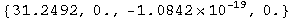
Works to within default accuracy.
Now on to the question. Map the given quaternion to its proper time interval.
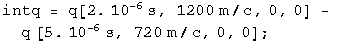
![[Graphics:ps4gr10
1.gif]](../../images/SR/problem_set_4/ps4gr101.gif)
![[Graphics:ps4gr102.gif]](../../images/SR/problem_set_4/ps4gr102.gif)
The proper time is 2.54 microseconds. This is less than the time of 3 microseconds observed in this frame.
Boost the interval up 0.6c, & repeat the cycle.
![[Graphics:ps4gr10
3.gif]](../../images/SR/problem_set_4/ps4gr103.gif)
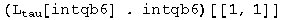
![[Graphics:ps4gr105.gif]](../../images/SR/problem_set_4/ps4gr105.gif)
![[Graphics:ps4gr10
7.gif]](../../images/SR/problem_set_4/ps4gr107.gif)
![[Graphics:ps4gr108.gif]](../../images/SR/problem_set_4/ps4gr108.gif)
The interval 2.53 microseconds is the same, less that 4.95 microseconds observed.
![[Graphics:ps4gr10
9.gif]](../../images/SR/problem_set_4/ps4gr109.gif)
![[Graphics:ps4gr11
0.gif]](../../images/SR/problem_set_4/ps4gr110.gif)
![[Graphics:ps4gr111.gif]](../../images/SR/problem_set_4/ps4gr111.gif)
![[Graphics:ps4gr11
2.gif]](../../images/SR/problem_set_4/ps4gr112.gif)
The interval is the same, less that 4.74 microseconds observed.
(b) Boost both event quaternions by beta, set the space components equal to each other, and solve for beta.
![[Graphics:ps4gr11
4.gif]](../../images/SR/problem_set_4/ps4gr114.gif)
![[Graphics:ps4gr115.gif]](../../images/SR/problem_set_4/ps4gr115.gif)
The frame must move a speed 0.53c in the direction of decreasing x.
(c) & (d) The interval is time-like. It is not meaningful to search for a proper distance between these two events.
The Twin Paradox
The tortoise & the hare
Q: The tortoise challenges the hare to a race in the woods. The hare laughs
hysterically saying "Surely, M'am, you are not serious?" But the tortoise is
serious; she gets on the course and starts running(?) right away. The course
is a closed loop beginning and ending at the same tree. While the tortoise is
running, the hare continues telling jokes with his friends. But when he sees
that she has almost gotten back to the finish, he decides that it is time to
teach her a lesson, and he dashes on the course as quick as he can to catch up
with her. Alas, he miscalculated slightly and he returns to the tree just
barely behind her!
QUESTION: Assuming that the two animals were of the same age before the race,
which one is older at the end of it? Justify your answer with quantitative
arguments!
A: Let the hare run the fraction f of the tortoise's proper time t. Calculate the tortoise's squared interval in terms of this fraction.
![[Graphics:ps4gr11
6.gif]](../../images/SR/problem_set_4/ps4gr116.gif)
![[Graphics:ps4gr117.gif]](../../images/SR/problem_set_4/ps4gr117.gif)
In the tortoise's reference frame, the hare initially travels away from the tortoise at the slow Btort speed for time t. Then the hare starts traveling toward the tortoise at Bhare speed for a time (1-f) t. Calculate the hare's squared interval.
![[Graphics:ps4gr119.gif]](../../images/SR/problem_set_4/ps4gr119.gif)
Look at the difference.
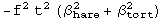
Since this term is always negative, the hare is necessarily younger than the tortoise.
R&H: B2-2 Einstein and the clock "paradox"
Q: Einstein, in his first paper on the special theory of relativity, wrote the following: "If one of the two synchronous clocks at A is moved in a closed curve with constant velocity until it returns to A, the journey lasting t seconds, then by the clock that has remained at rest the traveled clock on its arrival at A will be t v^2/2 c^2 seconds slow." Prove this statement. (Note: Elsewhere in his paper Einstein indicated that this result is an approximation, valid only for v << c.)
A: Compare the intervals of the two clocks, one that has move, the other that has remained.
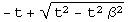
If beta << 1, calculate the series expansion.
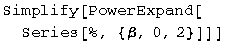
![[Graphics:ps4gr125.gif]](../../images/SR/problem_set_4/ps4gr125.gif)
The moving clock is t v^2/2 c^2 slower than the one at rest.
R&H B2-12: Getting Younger
Q: Can you think of any way to use space travel to reverse the aging process, that is, to get younger? Could you send your parents out on a long space voyage and have them be younger than you are when they get back?
A: There are actually two questions here. Starting with the last question first, with a HUGE investment of energy for the parents, time will appear to run at a slower rate than the clocks back at home. The energy investment is the critical parameter to determine if the clocks will run at different enough rates to have the parents return younger than their children.
The second question concerns reversing the aging process. The aging process will appear to proceed in the same manor for both parent and child. Why is this not reversible? Find the quaternion that reverses time.
LTimeRev q[t, x, y, z] = q[-t, x, y, z]
Compute LTimeRev by multiplying on the right by the inverse of q[t,x,y,z].
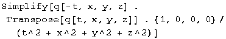
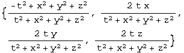
Aboard the spaceship, or on the Earth, t >>> x, y and z, so the time reversal quaternion is approximately
![[Graphics:ps4gr12
8.gif]](../../images/SR/problem_set_4/ps4gr128.gif)
Test that this works for someone moving a meter per second in the x direction, 0.5 m/s in the y.
![[Graphics:ps4gr12
9.gif]](../../images/SR/problem_set_4/ps4gr129.gif)
![[Graphics:ps4gr130.gif]](../../images/SR/problem_set_4/ps4gr130.gif)
The proposed quaternion does reverse time in the classical regime. Note that it is predominantly a scalar, almost q[-1,0,0,0] However, it is not exactly the identity. If we think about time reversal for two nearby worldlines, they will not commute by the small factor found in the second through fourth terms. This observation may lead to a new justification of the second law of thermodynamics.
French: 5-20 Signals from twins
Q: A and B are twins. A goes on a trip to Alpha Centauri (4 light- years away) and back again. He travels at speed 0.6c with respect to the Earth both ways, and transmits a radio signal every 0.01 year in his frame. His twin B similarly sends a signal every 0.01 years in his own rest frame. (a) how many signals emitted by A before he turns around does B receive? (b) How many signals does A receive before he turns around? (c) What is the total number of signals each twin receives from the other? (d) Who is younger at the end of the trip, and by how much? Show that the twins both agree on this result.
A: Start out by drawing the signals sent and received from B's frame of reference.
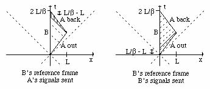
(a) The signals from A out are redshifted and received at B for a time of ...
![[Graphics:ps4gr13
1.gif]](../../images/SR/problem_set_4/ps4gr131.gif)
![[Graphics:ps4gr132.gif]](../../images/SR/problem_set_4/ps4gr132.gif)
The signals are sent at a rate of 100/year as viewed by the sender. This rate is lowered by the redshifting, so the total number of signals is the lower rate times the amount of time the signals are received.
![[Graphics:ps4gr13
3.gif]](../../images/SR/problem_set_4/ps4gr133.gif)
![[Graphics:ps4gr134.gif]](../../images/SR/problem_set_4/ps4gr134.gif)
B receives 533 redshifted signals from A.
(b) The signals from B are not shifted in B's frame, but are received at A for a time of...
![[Graphics:ps4gr136.gif]](../../images/SR/problem_set_4/ps4gr136.gif)
A receives 266 signals from B during A's trip to Alpha Centauri.
(c) It is easiest to calculate the number of signals received by A since the rate with B as a reference frame is constant.
![[Graphics:ps4gr13
9.gif]](../../images/SR/problem_set_4/ps4gr139.gif)
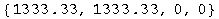
A receives a total of 1333 signals from B.
B gets blueshifted signals for a short time. The rate of signals goes way up.
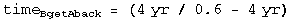
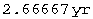
![[Graphics:ps4gr144.gif]](../../images/SR/problem_set_4/ps4gr144.gif)
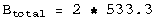
![[Graphics:ps4gr146.gif]](../../images/SR/problem_set_4/ps4gr146.gif)
B receives a total of 1066 signals from A.
(d) B has sent out 1333 signals, but has only received 1066 from A, so he has experienced more ticks of the clock. The difference is due to the instantaneous change of reference frame experienced by A.
Initialization functions
There are a few tools required to solve problems in special relativity using quaternions to characterize events in space-time. The most basic are a round value for c and gamma.
![[Graphics:ps4gr14
7.gif]](../../images/SR/problem_set_4/ps4gr147.gif)
![[Graphics:ps4gr14
8.gif]](../../images/SR/problem_set_4/ps4gr148.gif)
Define a function for quaternions using its matrix representation.
![[Graphics:ps4gr14
9.gif]](../../images/SR/problem_set_4/ps4gr149.gif)
A quaternion L that transforms a quaternion (L q[x] = q[x']) identical
to how the Lorentz transformation acts on 4- vectors
(Lambda x = x') should exist. These are described in detail in the
notebook "A different algebra for boosts." For boosts along the x axis with y
= z = 0, the general function for L is
![[Graphics:ps4gr15
0.gif]](../../images/SR/problem_set_4/ps4gr150.gif)
Most of the problems here involve much simpler cases for L, where t or x is zero, or t is equal to x.
If t = 0, then
![[Graphics:ps4gr15
1.gif]](../../images/SR/problem_set_4/ps4gr151.gif)
![[Graphics:ps4gr152.gif]](../../images/SR/problem_set_4/ps4gr152.gif)
If x = 0, then
![[Graphics:ps4gr15
3.gif]](../../images/SR/problem_set_4/ps4gr153.gif)
![[Graphics:ps4gr154.gif]](../../images/SR/problem_set_4/ps4gr154.gif)
If t = x, then
![[Graphics:ps4gr15
5.gif]](../../images/SR/problem_set_4/ps4gr155.gif)
![[Graphics:ps4gr156.gif]](../../images/SR/problem_set_4/ps4gr156.gif)
Note: this is for blueshifts. Redshifts have a plus instead of the minus.
The problems are from "Basic Concepts in Relativity" by Resnick and Halliday, 1992 by Macmillian Publishing, "Special Relativity" by A. P. French, 1966, 1968 by MIT, and Prof. M. Baranger of MIT.